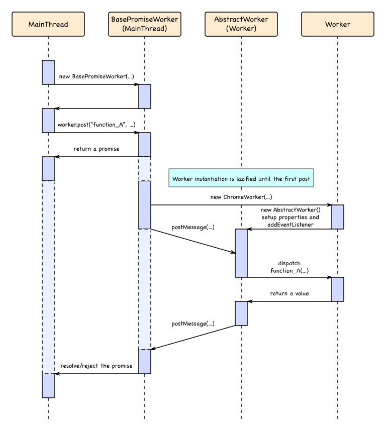

This article needs a technical review. How you can help.
Summary
A PromiseWorker is a ChromeWorker except instead of calling postMessage() to send a message, you call post(), which returns a Promise. JavaScript files imported into the worker scope and main thread scope which allows posting to the worker and receiving in the form of a promise. Like ChromeWorker objects, PromiseWorker is mostly used for js-ctypes but it is not limited to that. There is no XPCOM access, similar to ChromeWorker. This answers the question "When should I use a PromiseWorker?", and the answer is, whenever you would normally use a ChromeWorker, but want postMessage to return promises.
The PromiseWorker object is used to deliver all of the OS.File functionality to the main thread. Here is the test case from Firefox codebase: Mozilla DXR :: test_Promise.js.
PromiseWorker module consists of two JavaScript files, PromiseWorker.jsm and PromiseWorker.js.
PromiseWorker.jsm
Path: resource://gre/modules/PromiseWorker.jsm
A JavaScript code module used by the main thread to create a worker thread and communicate with it. PromiseWorker.jsm provides BasePromiseWorker.
PromiseWorker.js
Path: resource://gre/modules/workers/PromiseWorker.js
A JavaScript file used by the worker thread, which is created by PromiseWorker.jsm in main thread, to communicate with the main thread. PromiseWorker.js provides AbstractWorker.
Here's the simplified diagram of how PromiseWorker works (SVG version of the PromiseWorker diagram)
{kind=link}

Setup and usage
This section explains how to set up and use a PromiseWorker. As well known with workers, there is a minimum of two files required. The worker file, and the main thread file. The following sections tell you which content to use in your worker and main thread files, in order to use PromiseWorker objects.
Worker file
There is some standard templating that must be dropped into the worker file by the developer. The require.js file must be imported with WorkerGlobalScope/importScripts(). Next, the PromiseWorker.js file should be brought in with the require() method. Finally, the template code should be added in. The code below is what should be copied and pasted:
importScripts("resource://gre/modules/workers/require.js");let PromiseWorker = require("resource://gre/modules/workers/PromiseWorker.js");// Instantiate AbstractWorker (see below).let worker = new PromiseWorker.AbstractWorker()worker.dispatch = function(method, args = []) {// Dispatch a call to method `method` with args `args`return self[method](...args);};worker.postMessage = function(...args) {// Post a message to the main threadself.postMessage(...args);};worker.close = function() {// Close the workerself.close();};worker.log = function(...args) {// Log (or discard) messages (optional)dump("Worker: " + args.join(" ") + "\n");};// Connect it to message port.self.addEventListener("message", msg => worker.handleMessage(msg));
AbstractWorker is a base class for the worker, and it's designed to be used by derived class, which provides above four methods (dispatch, postMessage, close, and log). but you can instantiate AbstractWorker itself and set its properties later, instead of creating derived class.
Main thread file
The BasePromiseWorker object needs to be imported:
const { utils: Cu } = Components;
const { BasePromiseWorker } = Cu.import('resource://gre/modules/PromiseWorker.jsm', {});
let myWorker = new BasePromiseWorker("path_to_worker_file.js");
You're now ready to start using PromiseWorker.
Sending a message from main thread
To send a message to a worker from the main thread, one normally uses postMessage(). For PromiseWorker objects, however, you can't do that. Instead, use the post() method, as seen below.
post
Syntax
promise = myWorker.post(aFunctionName, aArgs, aClosure, aTransferList);
Parameters
aFunctionName- The name of the function to be called as it appears in the worker file.
aArgs-
An array of arguments to pass to the function named
aFunctionNamein the worker file. If the worker function does not have any arguments and the empty array should be passed here. If any of the arguments is aPromise, it is resolved before posting the message. If any of the arguments needs to be transferred instead of copied, this may be specified by making the argument an instance ofBasePromiseWorker.Metaor by using theaTransferListargument.By convention, the last argument may be an object options with some of the following fields:
- outExecutionDuration
- {number|null} A parameter to be filled with the duration of the off main thread execution for this call.
aClosureOptional- An object holding strong references to value that should not be garbage-collected before the reply has been received.
aTransferListOptional- An optional array of
Transferableobjects to transfer ownership of. If the ownership of an object is transferred, it becomes unusable (neutered) in the context it was sent from, and it becomes available only to the worker it was sent to. - Only
MessagePortandArrayBufferobjects can be transferred. To learn more on how to achieve this see the section in this article titled Transferring special data from main thread to worker.
Returns
A Promise object.
Transferring special data from main thread to worker
The regular rules of workers apply; special data of MessagePort and ArrayBuffer objects can be transferred as of Firefox 40. There are two ways to transfer data. The first is with aTransferList argument and other with BasePromiseWorker.Meta. Both are done by the post function described above.
aTransferList
To transfer an ArrayBuffer object, pass an array containing it as aTransferList argument.
myWorker.post("func", [buffer], null, [buffer]);
This is simpler if the you know what to transfer at the callsite.
BasePromiseWorker.Meta
Above code can also be done with the Meta object. Each special data argument that you want to transfer, you can wrap in a BasePromiseWorker.Meta object. The above example can be rewritten like this:
myWorker.post("func", [new BasePromiseWorker.Meta(buffer, {transfers: [buffer]})]);
This is convenient if the function's arguments are generated by some other functions or passed from somewhere else. post callsite doesn't have to know which object should be transferred. For example:
myWorker.post("func", [foo(), bar(), baz()])
foo now has the power to determine if the argument should be transferred by returning a Meta instance. So it can transfer an object without modifying the caller.
Here is a simple demo showing how to transfer the second argument to a worker: Github:: PromiseWorker Transfer Data Line 23. The command outline below this shows how to do the same with Meta syntax.
Sending a message from worker
With all other workers, to send a message to the main thread, postMessage is typically used. However with PromiseWorker objects this is no longer the case, simply return data or throw from your function depending if you want to resolve or reject the promise. In summary, from a worker file, data can only be sent back as a response to a request from the main thread, it is not possible for a worker to send data to the main thread otherwise, this is a key difference between PromiseWorker worker file and all other types of workers.
Resolving the Promise
To resolve the promise from the worker, simply return anything from the worker scope, and the main thread promise will be resolved with the returned value.
function func(buffer) {
// do something with buffer...
return 1; // 1 is sent back to main thread, as a resolved promise.
}
Transferring special data from worker to main thread
Just as it was possible to transfer special data from main thread to worker, it is possible to transfer data from the worker to the main thread. Transferring is possible only when resolving the promise from the worker. Unlike when sending/transferring from the main thread, transferring from worker does not require each piece of data that you want transferred to be wrapped in its own Meta object. Instead, the whole return should be wrapped. Also unlike sending/transferring from the main thread, when sending/transferring from worker there are no alternative syntaxes, it must be wrapped in a Meta object.
This example shows how to transfer a single value, which is an ArrayBuffer.
return new PromiseWorker.Meta(aBuf, {transfers: [aBuf]});
If you want to return an object or an array and transfer only certain parts of this data, it would all have to be return wrapped in this Meta object like so:
return new PromiseWorker.Meta({
theBuf: aBuf,
otherNonTrans: 'this string is not transfered but copied'
}, {transfers: [aBuf]});
A simple demo showing this in live action can be found here: Github :: PromiseWorker Transfer ArrayBuffer - Worker Side
Rejecting the Promise
To reject the promise from the worker, simply throw. Various error objects are supported; each one has its specific meaning; they're described below.
Supported built-in JavaScript Error are following:
In addition to them, StopIteration is also supported (note that StopIteration is deprecated).
You can also construct and throw your own custom error objects as needed. When custom error is caught by AbstractWorker, toMsg method will be called to convert it into message. The toMsg function should return an object which has exn property, that is the property key for the fromMsg function in main thread side.
// Worker
// Define a custom error prototype.
function CustomError(message) {
this.message = message;
}
CustomError.prototype.toMsg = function() {
return {
exn: "CustomError",
message: this.message,
};
};
// A function called by message.
function func() {
...
// Throw a custom error.
throw new CustomError("meow");
}
The converted message will be posted back to the main thread, and it will be converted again to error object, with fromMsg function specified for the error in ExceptionHandlers property. This is seen in a simple demo GitHub :: PromiseWorker Custom Errors Demo - Main Thread Setup.
// Main thread
// Define a custom error prototype.
function CustomError(message) {
this.message = message;
}
CustomError.fromMsg = function(msg) {
return new CustomError(msg.message);
};
// Register a constructor.
myWorker.ExceptionHandlers["CustomError"] = CustomError.fromMsg;
This is seen in a simple demo at GitHub :: PromiseWorker Custom Errors Demo - Worker Side Setup.
The complete demo is found here: GitHub :: PromiseWorker Custom Errors Demo
Catching the Promise
From the worker, it is not possible, as of Firefox 40, to cause the promise on the main thread catch. Any developer errors on the worker side, such as syntax errors, type errors, and so forth, will cause the promise to reject. A catch will trigger if there is a developer error in the main thread resolve or reject callbacks.
Complete example
Following example provides resolveTest function, which resolves the promise when true is passed as an argument, and rejects the promise when false is passed as an argument, and post messages to it from the main thread.
Worker file
myWorker.js
importScripts("resource://gre/modules/workers/require.js");let PromiseWorker = require("resource://gre/modules/workers/PromiseWorker.js");let worker = new PromiseWorker.AbstractWorker();worker.dispatch = function(method, args = []) {return self[method](...args);},worker.postMessage = function(...args) {self.postMessage(...args);};worker.close = function() {self.close();};worker.log = function(...args) {dump("Worker: " + args.join(" ") + "\n");};self.addEventListener("message", msg => worker.handleMessage(msg));// start - my functionalities function resolveTest(shouldResolve) { if (shouldResolve) { return 'You sent to PromiseWorker argument of: `' + shouldResolve + '`'; } else { throw new Error('You passed in a non-true value for shouldResolve argument and therefore this will reject the main thread promise'); } }
Main thread file
bootstrap.js
const { utils: Cu } = Components; const { BasePromiseWorker } = Cu.import('resource://gre/modules/PromiseWorker.jsm', {});var myWorker = newBasePromiseWorker('chrome://path/to/content/myWorker.js'); var promise_doMyFuncTrue = myWorker.post('resolveTest', [true]); promise_doMyFuncTrue.then( function(aVal) { console.log('Fullfilled - promise_doMyFuncTrue - ', aVal); }, function(aReason) { console.error('Rejected - promise_doMyFuncTrue - ', aReason); } ).catch( function(aCaught) { console.error('Caught - promise_doMyFuncTrue - ', aCaught); } ); var promise_doMyFuncFalse = myWorker.post('resolveTest', [false]); promise_doMyFuncTrue.then( function(aVal) { console.log('Fullfilled - promise_doMyFuncFalse - ', aVal); }, function(aReason) { console.error('Rejected - promise_doMyFuncFalse - ', aReason); } ).catch( function(aCaught) { console.error('Caught - promise_doMyFuncFalse - ', aCaught); } );
Result
Running the code above will log the following information to the console:
"Fullfilled - promise_doMyFuncTrue - " "You sent to PromiseWorker argument of: `true`" bootstrap.js Line 8 "Rejected - promise_doMyFuncFalse - " "You passed in a non-true value for shouldResolve argument and therefore this will reject the main thread promise" bootstrap.js Line 25
Other examples
- GitHub :: PromiseWorker with Backward Compatability - This example is of a Firefox addon that copies and pastes in the contents of PromiseWorker.js and PromiseWorker.jsm so that it works all the way back till the Firefox version in which the Promise interface was frozen.
- GitHub :: PromiseWorker Transfer Array Buffer - This example is of a Firefox addon that shows how to transfer an ArrayBuffer between the main thread and worker.
- GitHub :: PromiseWorker Custom Errors - This is a simple fully working demo that shows how to reject promises with custom user-defined errors.